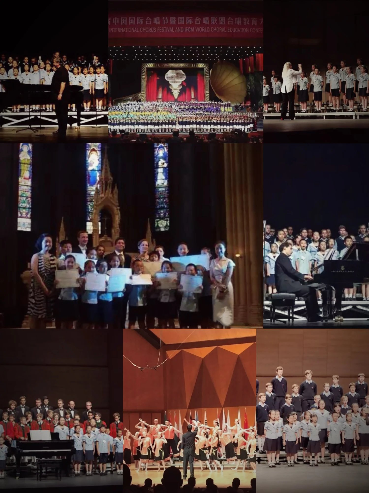
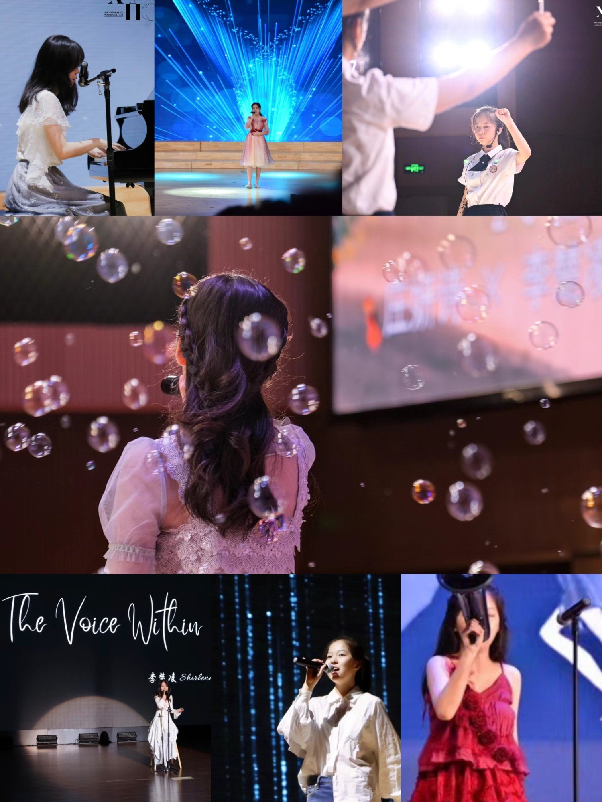
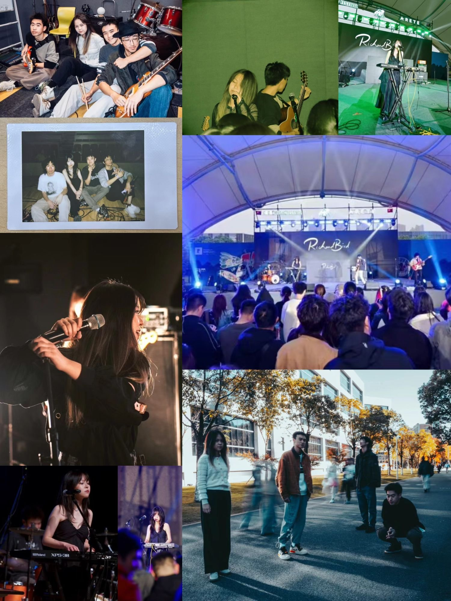
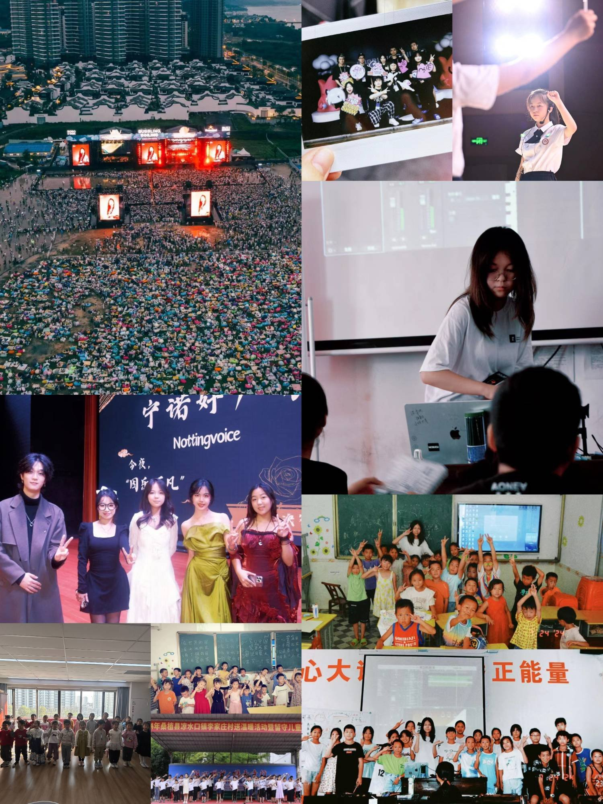
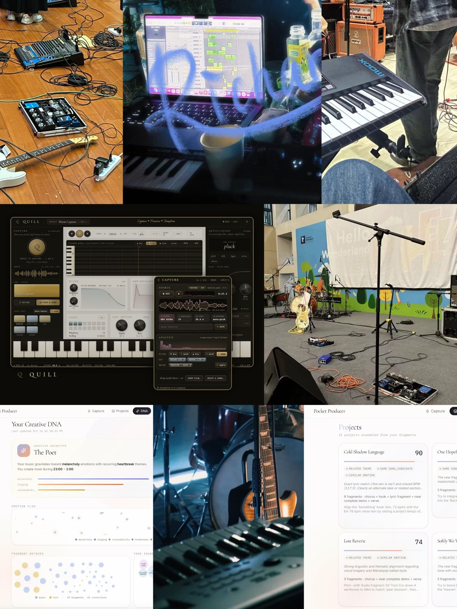

The story so far
03 · STORYChoose a chapter to explore.
I began studying classical piano at an early age and passed the China Conservatory of Music's Grade 6 examination when I was seven. I later joined the Banlam Grand Theatre Children's Choir in Xiamen, China, where I had the opportunity to perform alongside choirs from Austria, France, and New York, including Les Petits Chanteurs de Saint-Marc, the choir featured in the film Les Choristes. Around the same time, I also began training in bel canto. My interest in singing continued into high school, where I was admitted to Xiamen No.1 High School as a vocal specialist and performed with both its children's and mixed choirs.
Selected Performances
- With the Banlam Grand Theatre Children's Choir, shared stages with the Wilten Boys' Choir (Austria), Les Petits Chanteurs de Saint-Marc and Les Petits Chanteurs à la Croix de Bois (France), and a gospel choir from Harlem, New York
- The 13th China International Chorus Festival and IFCM World Choral Education Conference: opening ceremony at the Great Hall of the People; "Four Outstanding Chinese Children's Choirs" concert at the Beijing Tianqiao Performing Arts Center
- Artistic exchange with Les Petits Chanteurs à la Croix de Bois in Autun, France, received at the Town Hall by the Mayor of Autun
- Xiamen No.1 High School Choir: Gold Award and first place, Folklore category, 2017 World Youth & Children's Choir Festival – Hong Kong (WYCCF), with folk songs of China's Yi and Tujia ethnic minorities ("Spring Has Come" and "Dong Dong Kui") and the Balinese "Janger"
Since high school, I have remained active as a solo singer, performing at campus music festivals and other events. I won first place in the Xiamen No.1 High School Singing Competition in 2021, placed in the Top 10 of UNNC Voice in 2023, and was runner-up in the University of Nottingham CSSA Singing Competition in 2025. Beyond competing, I was invited to serve as a mentor and judge for UNNC Voice in 2024 and to perform at the CSSA-UK Southern Performing Arts Festival in 2026, along with various other events.
Selected Performances
- 2021 · Xiamen No.1 High School Inter-School Music Festival, piano and vocal画 (Painting) by G.E.M.
- 2021 · 1st place, Xiamen No.1 High School Singers CompetitionBaby, До свидания (Baby, Goodbye) + Ой, цветёт калина (The Snowball Tree Is Blooming) by Pu Shu / Soviet song, Listen by Beyoncé, Vaga luna, che inargenti by Bellini etc.
- 2022 · Gaokao send-off concert for an audience of 3,000+夜空中最亮的星 (The Brightest Star in the Night Sky) by Escape Plan
- 2023 · Top 10, UNNC Voice, University of Nottingham Ningbo ChinaStill Loving You by Scorpions etc.
- 2024 · Lead vocal on 星火 (Fiery Stars), the original song for UNNC's 20th anniversary
- 2024 · Mentor and judge at UNNC Voice, opening the finalThe Voice Within by Christina Aguilera
- 2025 · Runner-up, University of Nottingham CSSA Singing CompetitionStop! by Sam Brown
- 2026 · Invited performer, CSSA-UK Southern Performing Arts FestivalLanguage by Tori Kelly
In September 2023, four of us, all science and engineering students with a shared love of music, formed Richard Bird, a band rooted in blues and hard rock that later expanded into funk and R&B. I take on lead vocals and keyboard/synthesizer. Since then, we have opened the evening stage at the CACA Music Festival, performed at multi-band showcases including To Be Found and Cracking Seeds, and played at countless other campus music festivals.
"You know some birds are not meant to be caged,
their feathers are just too bright."
Selected Performances
- 2023 · T!NY Vol.1, our first show, lead vocalWhole Lotta Love by Led Zeppelin, Come as You Are by Nirvana etc.
- 2023 · T!NY Vol.2 "Peace in Pieces", lead vocalHeartbreaker by Led Zeppelin, Hammer to Fall by Queen etc.
- 2024 · Cracking Seeds, UNNC Bands Club special performance, lead vocal and keyboardHigher Ground by Stevie Wonder, Perfect Story (original), On Your Right (original) etc.
- 2024 · Wonderland Music Festival and UNNC Show Night, guest keyboardistRick Rice Rock (original) etc.
- 2025 · CACA Music Festival, invited opening act for the evening stage, lead vocal and keyboardSuperstition by Stevie Wonder, 艷火 (Pyrojewel) by Deserts Chang etc.
- 2025 · To Be Found, UNNC Bands Club special performance, lead vocal, keyboard and live programmingRio Funk by Lee Ritenour, Heartbreaker by Led Zeppelin, Still by Brian McKnight etc.
Music has also been something to organize and pass on. In high school I organized and conducted my class's entry to the Xiamen No.1 High School choir competition as overall leader, and won the Best Conductor award. At university I served as Performance Team Leader of the UNNC Music Association through 2023–24, running weekly live music sessions, supplying performers for university-wide events, and leading their rehearsals and performance preparation.
In June 2024 I led a volunteer stage crew at the Bubbling Boiling Music & Arts Festival, with more than 50,000 attendees: monitor-desk-to-PA operations, run-down tracking, and cable patching at changeovers. That July I was a volunteer teacher on a summer education program in Lijiazhuang Village, Hunan, rehearsing a choir of over 100 rural primary school children and running interactive music workshops such as live looping. In December I returned to UNNC Voice as mentor and judge, building and coaching my own team of contestants through the competition, and in spring 2025 I taught a children's choir in a Ningbo community.
Making music while writing code kept raising one question: how can intelligent systems truly support musicians? I followed it from offline retrieval in Pocket Producer and decoupled synthesis in Quill, to validating models inside a DAW on HARP, to real-time interaction on stage with Second Self. In graduate school I want to deepen my foundation in audio signal processing and music information retrieval, and to ground system design in human-computer interaction, through user studies with musicians in real creative settings. I want to ask not only whether a model is accurate, but whether it helps a musical idea develop and keeps a performance flowing. The goal is technology that expands what musicians can imagine and perform, with human creativity at the heart of it.




